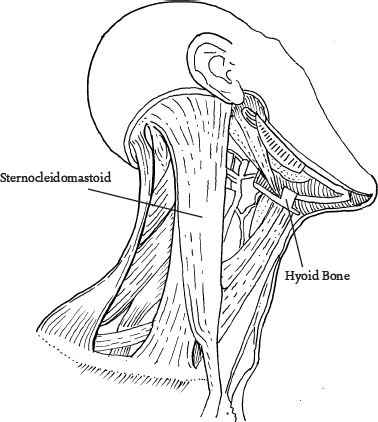
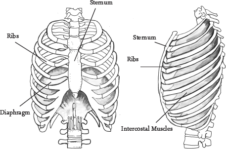

Feldenkrais for Actors
I don’t think I need to spend much time explaining why it’s important for an actor to be able to use their voice! If you ask a new drama student why they need vocal training, they will probably come up with the need to ‘project’ for theatre and to work on their singing. A resonant, strain-free and versatile speaking voice is going to be an important tool for any kind of acting, screen as well as stage. A voice that is not facilitated well by the breath, cannot make use of natural resonance and is ‘strangled’ (forced by tension or overwork) won’t have as much range in terms of volume as will a trained voice, but it is also, more significantly, unlikely to have as much range of expression, conviction and connection to feeling. In my public practice, I sometimes meet people who cannot express the depth and wealth of opinion they have in a way that enables them to be heard and valued. It is almost as if their voice is being cut off or diminished, and with it their words too. Feldenkrais himself suffered from laryngitis aged twelve, and even at that tender age worked out that there was nothing ‘wrong’ with him, but that he was developing tensions and difficulties in his own musculature which he could improve himself. Mark Reese, his biographer, says: ‘He understood that those muscular contractions reflected a conflict between his desire to express himself and his fear of disapproval.’86 I was talking to an experienced voice teacher recently about the need for an actor to ‘find their voice’ to be able to inhabit the character convincingly, but she stressed that it can be the other way around too: the ability to inhabit the character convincingly is often what is needed to find and release the actor’s voice for the role. Already we are in a wider territory than vocal training in terms of what ‘finding your voice’ might involve.
I have the pleasure of working in drama schools in which I can talk to voice teachers who have a great understanding of the delicate and detailed movement of the cartilages of the larynx, the soft palate and tongue, in specific ways to enable different kinds of sound for singing as well as speaking. Feldenkrais included some but not all of this in his lessons as we have them, but we can take recent anatomical and physiological understanding and create Awareness Through Movement lessons from it. There are Feldenkrais teachers who are also Voice Craft or Estill teachers who have that knowledge and do exactly that – most notably Maggy Burrowes in the UK and Robert Sussuma in the US. There are also Feldenkrais teachers whose experience and learning enable them to take Feldenkrais lessons further into voice, such as Richard Corbeil in the US.87 There are vocal systems like Kristin Linklater’s that are, conversely, very influenced by Feldenkrais and which the Method is often used to support. These approaches are good and exciting, and I would recommend them highly.
Because of a wider awareness of what can affect the voice, Feldenkrais teachers who are not specifically vocal coaches can teach a great deal to enable voice too. Indeed, the Method is increasingly used to support voice training as well as movement at drama schools. The head of voice at one London school once told me that since they had had Feldenkrais classes in the school, her teaching had been able to ‘sink in like butter’. In the Peter Brook/Teatro El Campesino workshop I described right at the start of the book, Dr Feldenkrais spent almost half the time on lessons for voice. In my private practice I regularly work with voice teachers, singers, actors and those who have issues with their breath and voice.
Feldenkrais for Voice
It is arguable that almost any Feldenkrais lesson you do is likely to enable your voice in some way. And that’s because your voice is not a separate thing from the rest of you. This idea – that the voice might have something to do with movement – is not on many laypeople’s radars, and students are often surprised to find themselves doing so many physical exercises in their voice lessons. You don’t have to think about it for long to get the point. After all, the muscles involved in breathing are also involved in moving: improve the one and you enable the other. Any of the parts of ourselves that we habitually hold, tighten, compress or simply leave out of the picture may also be places we need to use in different ways for the breath and to make sound. Then there are also specific lessons in the Method that enable the breath or develop awareness of the tongue, jaw, palate and the whole inside of the head cavity (which includes the main areas of resonance). These lessons are, as is all of the Method, exploratory in their nature, ensuring you bring your attention to the different places involved, inviting you to begin to use those places in a greater variety of ways so as to enhance vocal production. They don’t give you a ‘to-do’ list for specific sounds as much as they lower the level of unnecessary tension, create more choice, invite you to feel the connections between voice, breath and how you use your whole self; and enable you to let go of some of the compulsive habits that are getting in the way of better breathing, greater resonance or improved clarity.
For example, we have strong, often very old, habits around how we hold the jaw and tongue. You might notice them especially when you are concentrating, writing, doing something difficult or feeling strong emotions. Think of the child that sticks their tongue out when writing, or notice what you do yourself with your mouth when you are working out a difficult maths problem, or playing a tricky passage on a musical instrument – or perhaps the feeling you have in the jaw, mouth and throat when you are sad, angry or anxious. What you do with your jaw and tongue is also related to your neck, and given your neck is part of your spine, what happens there doesn’t only involve the movement of the head but has an effect on the whole of the spine, with consequences for every movement you make – and vice versa. If you want to feel the connection of the jaw and tongue to the neck try this (I have included a little bit about the eyes too, as they are also part of this interesting picture):
Head, Jaw, Tongue – and Eyes!
Lie on your back with your knees bent, feet planted, and feel where your head rests. Which part of the back of the head touches the floor? Where is Home?
Roll your head left and right gently and see what movement you have easily. Be sure to really listen to what is truly easy and stop at the first moment you feel an interference, so you will notice if anything changes in this range of real ease.
Put your tongue out of the right corner of your mouth and very gently let it lead your head to right a few times. How does it go? Is it different? Then the same to the left. Now turn the head again on its own and feel the difference.
This time, move your tongue to the right and try and take your head to left. If your tongue is really going to the right it will hardly be possible! But be gentle!
Roll your head on its own again and feel how it is.
This time open your mouth a tiny bit. Move your jaw a teeny bit left and right – very soft and small and slow as you can easily do too much here. Just enough that your two front teeth, top and bottom, go a little bit out of alignment. It may be easier one way than the other. Listen to back of neck – you may feel something shift there at base of skull in tonus of muscles.
Now move your jaw to right and turn your head to right. Jaw to left and head to left. Listen to your eyes as well. Do they go with head or jaw or neither?
Move your jaw and eyes and head to right and left all together.
Move your jaw and eyes to right but this time try and take your head to the left. Now jaw and eyes to right and try and move your head to left. Finally, move them left and right all together again.
Now simply turn your head on its own and notice the range of real ease.
Feel where your head rests too. Where is Home now? You can do this sitting as well as lying down.
It would take a lot of pages to give you a game or lesson for each of the following, so you will have to take it on trust that using your shoulders and arms independently of your head (and vice versa) and in synergy with the ribs has consequences for your breath and throat – and how your feet, legs and pelvis support and enable your posture and movement makes a big difference to the freedom of your whole structure, as well as your breath and voice. I hope that you are getting the point that every time you strain excessively somewhere to produce a movement, you are likely to feel it in your breathing pattern and hear it in your voice. You can feel it if you try to speak while you are lifting something heavy or are doing intense exercise, but here is something more subtle to try:
Walk around the room. Every now and again sit down, and then get up and walk on.
At the same time as you do this, make an ‘aaaah’ sound, and notice when your voice is interrupted or strained by the effort of getting down or getting up.
Now go back to Lesson 8: Getting Up and Down from the Floor with a Twist on p. 145.
Make the movement as smooth as you can and now add the ‘aaah’ sounds again. Are you able to make the sound without as much interruption or change in quality of the sound? Notice the parts of the movement where your voice is not so easy. Don’t try to control your voice, but see if you can change the quality of the movement at these points and notice if your voice is less strained or strangled.
If you found a difference you might be able to appreciate that many of the issues for voice are the same as for movement of any kind – inappropriate levels and distribution of work through the system; substituting muscular effort for support from the skeleton and ground; patterns of holding and tension; lack of clarity in the pattern of movement. It is therefore true that any Feldenkrais lesson is likely to have an effect on the breath and voice too, because any lesson works with these issues. If you do specific voice lessons, the voice teacher’s concerns will also include whether you are substituting force for skilful and appropriate use of the breath and vocal apparatus, and whether that is enabled by the rest of you. Skill rather than effort. Same old, same old. As one singing teacher said to me, you may be able to sound good in one song, but if the technique is poor and if you are substituting effort for good use, it won’t hold up over time or through a range of songs.
As with all of the Feldenkrais Method, one book cannot possibly give you the whole picture – and certainly not one chapter when it comes to voice – so if you are interested it is worth looking at the practitioners I mentioned earlier too. For now let’s take some of the more specific aspects individually to give you a sense of how it works. And you will find we have covered some of them already!
Posture/Acture
At the risk of repeating myself: if the skeleton is not able to do its job of supporting you sufficiently because it is being pulled a little this way or that, then muscles that are not well suited to the job will have to start joining in and working to hold you up – and some of that extraneous work is likely to interfere with your breath and your voice, as we saw in Lesson 6: Lifting the Head. The job of your ‘posture’ is to maintain a good enough balance to allow you to do what you want and not get in the way: for all of that I refer you back Part 2.
It is all too easy for the idea that posture is dynamic and is about relationships of different parts of you in movement to go out the window at this point, for it all to become about standing up ‘straight’ in a specific ‘alignment’ in order to facilitate the voice. Specific positions may be important to enable certain vocal exercises, but if that is interpreted as a model for how to be all the time, then what happens when you are giving your dying speech in Antony and Cleopatra? Are you standing up straight or lying neatly in a straight line then? What happens when you play a slouchy teenager or a broken-down old woman, or you have to sing or talk upside down? I have said it already: posture has to be about finding support from the skeleton and from the ground in all kinds of positions and movements. It is important for an actor (indeed for anyone) to explore and understand the relationship between their voice, breath and posture, but not to become reliant on one organisation or one specific ‘alignment’ only.
So we are thrown back to the idea of relationships between parts as fundamental to the notion of posture (or acture). Having a sense of the relationship of the torso and pelvis to the head is obviously key here, so that the comparatively little muscles of the neck and throat are not trying to do work that the torso and pelvis can do. Lesson 6 showed this well: lift the head just with the neck and you compress the throat and strain the voice. Allow the chest to bend, the back to lengthen and the pelvis to curl up so the big muscles do the donkey work of lifting the head, helped by the support from the ground and the C-shape of the spine. Then you will find the neck is freed of the work so it can move, and the throat is no longer compressed so you can speak – and if the ground and the C-shape do enough of the work, then a better use of the abdominal muscles can allow your breathing to be easier into the bargain.
Balance of the Head
It is particularly worth noting that the skull is carefully balanced at a point where there is a little more weight in front of the spine than behind, so the muscles of the back of the neck do more to hold the head up than the muscles at the front, which gives the throat some freedom. If the pattern of posture means that the skull’s weight falls too much in front of the spine, the muscles of the back of the neck will have to do even more to keep the head upright, and that in turn may demand that the anchoring muscles around the neck towards the front, and even the delicate little muscles attaching at the hyoid bone in the throat, may work to counterbalance the increasing pull from the neck. In this picture, the head, throat and the jaw will not be as free as they could be to facilitate movement or voice. This is just one rather oversimplified scenario, but it gives you an idea of the delicacy of balance required between the muscles. It is not possible to correct this kind of thing muscle by muscle, as there is a great web from the tiny muscles at the base of the skull and jaw, to the strong and very visible V of the sternocleidomastoid muscles, which run down each side of the front of the throat to the huge trapezius muscle at the back, which in turn runs from halfway down the back out to the shoulders and up to the base of the skull – as well as many more to the ribs and shoulders and down the front and back of the cervical spine or neck. What is required is a delicate balance through the whole structure, which only the nervous system below the level of conscious instruction can really regulate. This is why the Feldenkrais approach of noticing and playing with the changing relationships between parts in a structured way, out of which an effective functional balance can emerge as Home, is so helpful.

It always sounds like the title of a sci-fi film, but actually the seventh cervical is the bottom vertebra of the neck, which meets the top vertebra of the spine (first thoracic). It forms the vital gateway between the neck and the back, a junction that is also influenced by the rest of the spine below it, the shoulderblades to either side, and the junction of the collarbones and breastbone in front.
One typical example I can give you of its importance: a student comes to see me who has been told that he pushes his chin too far forward so that the back of his neck is shortened and the front of the neck is pulled tight. As the delicate balance of the skull is out, all sorts of muscles are also working harder than they should to stop the head falling forward. Sometimes students like this will have been told to lengthen the back of their neck and pull their chin in and down: not bad advice, except they usually can’t lengthen the back of their neck, and they find pulling the chin in simply compresses their throat and makes everything worse. Often their pattern goes with a sunken chest, which they also try to push forward, compounding the problem by compressing the throat more and gluing the collarbones to the ribs. What often gets overlooked here, or is just hard to facilitate, is that the seventh cervical and first thoracic are usually stuck in a position that pushes the base of the neck forward and narrows the space at the very top of the back between the shoulderblades. If these vertebrae don’t unstick and find their mobility, the very top of the back cannot widen to let the neck find its length. Still with me? It’s not easy to picture unless you have felt it. Let’s have a go.
Pecking and Chicken Wings
Either sitting or standing, move your head directly forward, keeping it parallel with the floor and without tipping it up or down. Your chin goes straight forward, neither lifting nor dropping: like a chicken pecking. Feel what happens in your chest. Does it lift or sink? Now bring your chin straight in towards your neck without lifting or dropping. Feel what happens in your chest. Don’t do anything special, just feel the difference. Also listen to the very top of your back. Does anything happen there? Is there any forward or backward movement, widening or narrowing in that place?
Now bend your arms and take your elbows backwards at the same time as your head slides forward. Once again, feel what happens in your chest but also in the top of your back between your shoulderblades: do you feel the potential for narrowing between the blades now?
Then as you take the head back, move your elbows out to side and forward like a chicken flapping its wings. Feel where the base of your neck can slide back into the widening space between your shoulderblades as the elbows go forward, so the chin can also come back comfortably without compressing your throat.
Now make movements smaller and smaller in each direction till you find the middle.
There are actually whole ATM lessons around this theme, and this game is just to give you a little sense of it. Sometimes the seventh cervical and adjacent vertebrae are really too stuck or it is too difficult for the person to feel and differentiate any movements in this unusual place. In this case, a Feldenkrais practitioner can work with their hands to facilitate the movement of these vertebrae as part of a whole hands-on lesson (see Functional Integration in Part 6) – but it is completely worth exploring as the difference can be really radical. My students are often shocked at the new feeling of where their head can sit, and how their chest can now open more easily – as well as the release of their diaphragm, which is no longer being squashed by the sinking of their lower ribcage, and the new freedom in the front of their neck/throat. Oh and their lovely new height or long neck as well!
Breath
All the above applies to breath, but it is worth spending time specifically on the parts of the body that are involved in breathing. There is not just one way to breathe: how you breathe when you run is different from when you are reading this book or when you lift a heavy weight; when you are frightened you breathe differently from when you are happy; and you do something very interesting with your breath and breathing apparatus when you laugh or cry or sneeze. Some ways of breathing excite or stimulate, and some are calming. And then there may be specific ways you learn to breathe for specific activities. Have a look at Morio Higaonna Sensei doing Sanchin Kata (youtu.be/kybxNOlnl20) and you will see a very extraordinary (and very difficult) use of breath for power. Yoga has different ways of breathing to suit a number of different purposes. Brass and wind instrument players, swimmers, singers (to name a few), may learn specific organisations of the breath to suit the specific demands of that activity. The fact that they are all different does not make one correct and the others wrong – they are just specific for a particular purpose. I often have students who are confused by the plethora of different advice about breathing, but the answer is to look at what the giver of advice is seeking to enable. The differences may simply be that what they are aiming at is different. In the variety of activities in everyday life, your breath will change spontaneously in response to your greater or lesser need for oxygen, unless something gets in the way of it – either because you feel you should ‘correct’ it or simply because some options are not sufficiently available.
As Kristin Linklater stresses, an actor needs a voice that is above all responsive, and responsiveness, as we have seen, means not being too fixed in one way of doing anything. That includes breathing, since emotional fluctuations, as well as varying levels and intensity of activity, require adaptation of the breath. With the Feldenkrais Method we can help make more options available for your system to draw on spontaneously, as needed, without conscious thinking. Then you can learn to differentiate more easily between specialised ways of breathing for specific activities (like singing or fighting). In addition, you may be dealing with nerves, so some ways of loosening the constrictions anxiety causes and using the breath to calm the system are helpful too (but we will look at that in Part 6). There are many breathing lessons in the Method; the one I have chosen for you here covers a lot of ground and is very unusual, so it is a good one to try as a taster.
A distinction is often made between abdominal (belly) and thoracic (chest) breathing. In real life we tend to use a mixture. In some ways this is a strange distinction, as your lungs are always in your chest and they have to fill and empty. You never actually breathe into your belly: it’s full of guts and other organs! In socalled abdominal breathing we rely more on the big muscle of the diaphragm flattening down as it contracts, pulling and opening the lungs downwards, and on the lower ribs opening, and a bit less on the upper ribs opening and lifting. It feels like breathing into the belly because of the expansion downwards, which means the abdomen is forced to swell. In thoracic breathing, while the diaphragm still descends, more room is made higher in the lungs by means of a greater amount of lifting and opening of the ribs via the intercostal muscles.

This lesson explores all of it. I always have to remind my students that this lesson is not about how to breathe. It simply makes every part more available, whatever your needs.
Start by trying out your voice. Make some long notes on an ‘aah’ at whatever pitch is comfortable (try a few), and then also just speak. Notice the resonance, the volume, the quality of the sound, the pitch of your speaking voice.
Lie on your back with long legs and just notice which parts of your back rest on the floor clearly.
Bend your knees and plant your feet. Notice what moves most when you breathe. Do you feel it more in your belly? If so, how low do you feel movement? As far as the groin? Do you only feel it in the front? Do you feel anything in your lower back or sides of the waist? Maybe you feel it more in the ribs – or as well. If so, what parts of the ribs? Just the lower ones or the higher ones too? The top rib runs right under the collarbone! What about the sides of your chest or back?
For a few breaths, focus on your abdomen, i.e. below the waist: your belly and lower back. When you breathe in, imagine you are blowing up a balloon inside you, and as you breathe out it deflates. Don’t be in a hurry to drag in another breath. Breathe all the way out and wait for the new breath to come. Although you may take in a little more than your usual breath, don’t force anything.
Notice if your lower back moves on the floor and at what point in the cycle of the breath. Does the pelvis rock? Breathe only into the front of the belly so it gets big. As we know, it’s not really breathing into your belly because you have no lungs in your belly. It is the diaphragm lowering that lessens the space for the organs in this area so the abdomen presses out to make more space. This movement at the front is likely to hollow your lower back a bit and rock the pelvis towards the tailbone. This balloon is not a perfect sphere if you think about it, it is just the front of it. You have the bones of the pelvis and the spine at the back so it can’t expand backwards in the same way, but there is still some space there, especially in the area of the bottom floating ribs and waist – and your spine can move, so the image of expanding at the back and sides gives you something rather different.
Now see if when you breathe in, you can also expand the back of the waist, so your lower back moves or glues to the floor a little more on the in-breath and the pelvis stays quieter. Put your hands on the sides of your waist near the floor, and as you breathe in you should feel it bulge out a little there into your hands. You will feel pressure on the pelvic floor, so if you have any issues with it (e.g. following childbirth), go gently. Do not force it powerfully.
When you have found this see if you can find the same movement without an in-breath. Can you just find the muscles that can make it expand like that?
Now direct the breath into the chest instead. Pull in the waist and blow up the chest like Superman. But don’t force it. See if you can allow the ribs to lift and open all around the chest-sides and back as well as front and, if there is any availability, right up to the collarbones. Breathe all the way out and let it sink. This kind of breathing is sometimes known as ‘costal breathing’ (‘costa’ is the latin name for ‘rib’) because it makes full use of the ribs and not just the diaphragm. In our daily life we use a mix of diaphragmatic and costal breathing, but specialist activities can require one more than the other, or even one exclusively.
Try this version without breathing in. See if you can find the muscles that pull the chest open like this.
Now pull in the belly and take a breath into the chest so it expands as just now, but this time when you breathe out have the sense that you push it out through the abdomen and pelvic floor – so that the abdomen expands and the chest sinks. And again, many times. This is called paradoxical or inverse-abdominal breathing, as it is opposite to what we normally do. As you do it you may begin to feel that there is a sort of a see-saw starting to happen between the belly and chest, one expands and the other sinks, and then vice versa.
Now take a breath into the chest again with the belly pulled in, but this time hold the breath and make the action of paradoxical breathing with the muscles only: so sink the chest and expand the belly. Then keep holding the breath but reverse it again: pull in the belly and expand the chest. Keep alternating. Do it as many times as the breath allows, and then take a pause and have another go on another breath. It may feel a little like squeezing a hot-water bottle at the top so the water is pushed into the bottom, and then squeezing it at the bottom so the water is pushed up into the top. Go softly, slowly and gently, allowing the transition to be smooth and easy. Notice if your back can stay on the floor, in which case you are using the whole of the diaphragm not just the front part.
Once you get the movement clearly and easily, you can play with making it small, light and quick, as well as big and slow.
Let your legs down and feel any differences in the parts of your back that lie on the floor.
Stand up and try out you voice again as you did at the start. Notice any differences in the resonance, the volume, the quality of the sound – and the pitch of your speaking voice.
Even standing might well feel different. If you think about how many parts of your torso were involved in that movement, it would not be surprising that your standing could have changed. It is actually a great ‘core’ lesson too!
Another big subject, and there are many lessons available for this. Many of us clamp the jaw, grind the teeth, have tension in the root of the tongue or a tendency to close the throat. And all of us have simple habits as to how we use these structures that we can explore. There are a number of lessons that work with the delicate movements of the jaw, and there are some good Feldenkrais CDs available described as being for TMJ (temporomandibular joint) syndrome that are actually great for anyone. (The temporomandibular joint is where the jaw meets the skull. You can find it if you almost stick your fingers in your ears, but feel just in front of the ear there instead. See picture opposite.)
We saw in the little game earlier how the jaw, tongue, neck and eyes are interrelated, but here is one of my favourite lessons that hits a number of spots all at the same time, it is a simplified version of ‘Palate, Mouth and Teeth’ (no. 23 in the Alexander Yanai series). If you do have TMJ syndrome, please take it very slowly and only where it feels comfortable to go. In anything you do with the tongue and jaw you must go gently, slowly and softly. The TM joint is very delicate, and for some people it is very easily strained. The muscles of the jaw are very powerful and trying to use any force at all is likely to create strong resistance and more tension. You may also be shocked to see just how big your tongue is and how far back the root goes. It goes some way to explaining its effect on your throat, jaw and neck.
Lesson 12: Painting Your Mouth
Start by trying out your voice. Make some long notes on an ‘aaah’ at whatever pitch is comfortable (try a few), and then also just speak. Notice the resonance, the volume, the quality of the sound, the pitch of your speaking voice.
Lie on your back with your feet planted.
Slowly explore the shape of the right side of the roof of your mouth with your tongue. (Do all this lesson on the right side of the mouth only first.) Notice the shape of the roof of your mouth on this side – all the funny ridges and curves of your hard palate. You won’t get as far back as the soft palate but you might feel how the sensation changes as you get close. Don’t force it where it doesn’t want to go.
Imagine your tongue is a paintbrush. Starting in the middle, slowly begin to paint the roof of your mouth on the right, in stripes from front to back.
Paint it again cross-wise this time, from the middle out to the right and back, also in stripes. Only to the right. Still slowly.
Now, still on the right side only, paint the floor of your mouth with your tongue. Paint it in stripes again front to back, curling the tip of back towards its root. Feel the shape of the floor of your mouth on the right.
Paint it again cross-wise from the middle to the right and back. Slowly.
Place your tongue behind the top front teeth. Slowly paint the back of each tooth with it in some colour you like, travelling only to the right from the middle and back to the middle. Feel each tooth and paint it well. If it is at all uncomfortable to get to the back teeth, go only as far as is comfortable and see if you can picture these back teeth instead, as if you were painting them.
Do the same with the back of the bottom teeth again travelling from the middle to the right only and back again. Go slowly and carefully, only as far as is comfortable.
Do the same with the front of the top teeth, placing your tongue on the front of the tooth but inside the lip – again from the middle to the right. It is a little more demanding on the jaw to have the tongue in this place so go only as far as is comfortable.
Now paint the front of the bottom teeth. From the middle to the right only.
Place the tongue inside the right cheek and paint as much of the inside of the cheek as you can manage comfortably, easily and slowly. If the jaw or tongue feels too stretched or forced you are going too far or doing too much – be gentle.
Place your tongue on the back of the top row of front teeth. Run it all round the back of the front teeth and continue round the back of the lower teeth as well (as far as is comfortable), making a half-circumference of the mouth like this. Then back again, round to the right of the bottom teeth and up to the top teeth and back to the middle.
Do the same with the tongue on the outside of the teeth. Just on the right.
Now you have painted the whole of the right side of your mouth with the tongue, how does it feel? Is it bigger or smaller than the left side? Do other parts of your face or throat feel different? Is there more of a sense of space in the right TM joint?
Do all of this on the left.
Stand up and notice how you feel in standing and whether the way you carry your head or anything else feels a little different. Now try out your voice again. Make some long notes on an ‘aaah’ and then also just speak. Notice the resonance, the volume, the quality of the sound, the pitch of your speaking voice.
A lot of the Feldenkrais Method uses constraints. In a sense, every time the teacher gives an instruction they set constraints. ‘Bring your arm forward’ rules out taking the arm up, down, behind or some other direction: it constrains you to one direction. Feldenkrais lessons typically go much further than that, creating constraints so that you have to find movement in a place you might otherwise avoid. For example: ‘Lie on your back, bring your arms directly above you, put the palms together and then take the arms to the left.’ In response to this, many people will simply bend the left elbow or let the right hand slide up the inside of the left arm. In this way not much happens that enables the movement of the shoulderblade or allows the person to feel how the movement of their arms is connected to the ribs and spine. So the lesson asks for two constraints: the palms mustn’t slide on each other and the left elbow mustn’t bend. That way you have to start to lift and slide the right shoulder and eventually do something with the ribs and the whole back that might travel right down to the pelvis.
There are a number of simple games with constraints you can play with for voice that invite you to use more of your vocal apparatus more effectively. In the discussion at the end of the workshop for Peter Brook’s company and Teatro El Campesino, Feldenkrais says that he feels the improvements one actor is making in his voice have slowed down a great deal since an initial burst of improvement. He suggests that this actor practices a speech absolutely as if speaking but making no noise. He says the actor will make another leap of improvement like that. His point is partly that doing the same exercises over and over begins to produce fewer results as we get into a habit of how we do the lesson: the nervous system becomes habituated to the same sensations in doing it rather than being interested in the new sensation it originally produced, and so we learn progressively less. When you make no sound, though, you get a very novel and different experience of speaking: without sound you are thrown on to the sensations of what you are doing with the various parts of your vocal apparatus in a different way. Try it.
There are a variety of different possibilities in this game to emphasise different aspects of making sound.
Constraints for Voice
Think of a short nursery rhyme, or a few lines of a poem or speech you know really well (so you don’t have to think about remembering words).
Say it normally first and notice how clear it is and what you can tell about the different parts of your mouth you are using. Then:
Keep your teeth fixed together but allow the tongue, lips and inside of the mouth to do whatever is needed to say it as clearly as possible. Just don’t let the teeth separate. Feel how your tongue and lips have to help out with this constraint. Say it many times like this. Now say it normally and notice the difference in how you use your lips and tongue and in the clarity of your speech.
Now keep the lips together but let the teeth, tongue and inside of the mouth do whatever is needed to say it as well as you can. The lips never separate. Many times. Notice how the inside of your mouth changes shape, what the soft palate (roof of the mouth towards the back) and the base of your mouth/root of the tongue do to help. You might feel other places very active too. Now speak the lines again allowing the lips to move again.
Now let the tongue hang out of your mouth and speak the lines many times without letting the tongue back in. Make the diction as good as you can make it under this constraint. Then speak again.
I hope this is enough to give you a clearer idea of how the Feldenkrais Method supports voice training and enables you to explore in a different way. If this area is of particular interest to you, I recommend strongly that you go further and look into the work of some of the other teachers I have mentioned (see the Appendix).